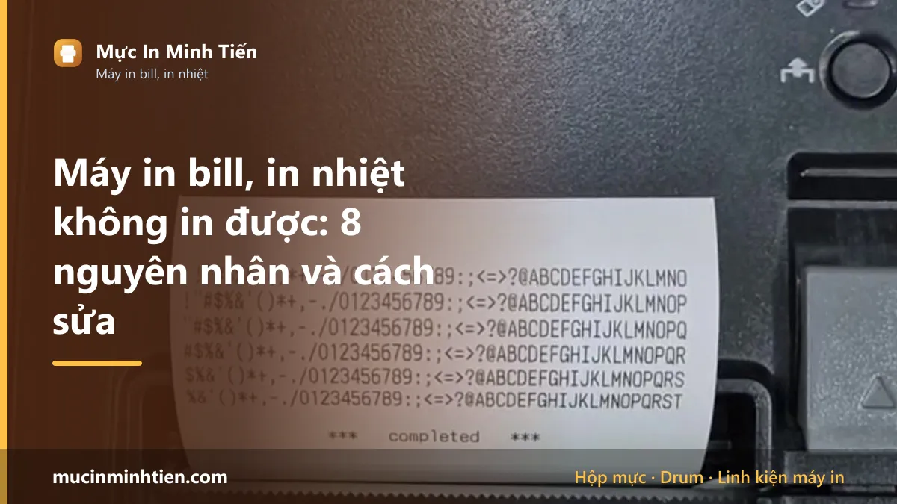
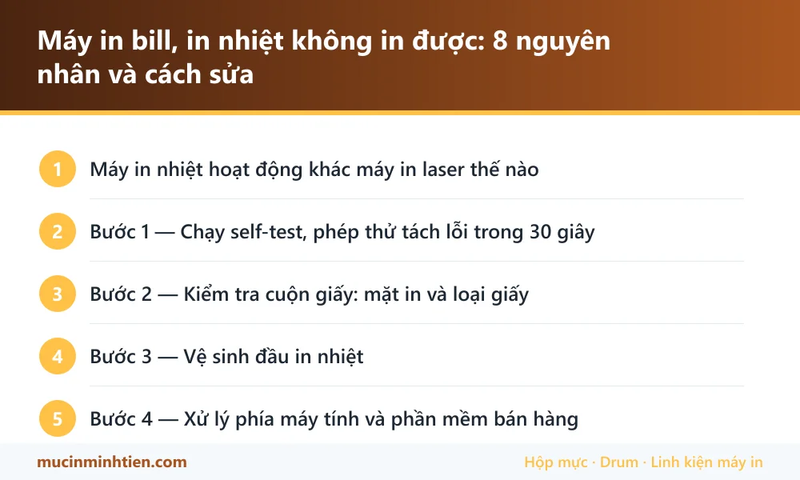

Máy in bill, in nhiệt không in được: 8 nguyên nhân và cách sửa

Máy in bill không in được chủ yếu do lắp ngược mặt cuộn giấy, dùng sai loại giấy, đầu in bẩn, sai cổng kết nối, chưa đặt máy in mặc định, sai tốc độ baud, nguồn yếu, hoặc đầu in đã chết điểm nhiệt. Máy in nhiệt không dùng mực nên nguyên nhân khác hẳn máy in laser — việc đầu tiên là chạy self-test để biết lỗi nằm ở máy hay ở phần mềm.
Máy in nhiệt hoạt động khác máy in laser thế nào
Hiểu nguyên lý giúp loại trừ nhanh hơn nhiều. Máy in bill không có hộp mực, không có drum, không có cụm sấy. Nó có một thanh đầu in chứa hàng trăm điểm phát nhiệt siêu nhỏ. Giấy in nhiệt được tráng một lớp hoá chất trên một mặt; khi điểm nhiệt chạm vào, lớp hoá chất đổi màu và hiện ra chữ.
Ba hệ quả trực tiếp từ nguyên lý này:
- Giấy chỉ in được một mặt. Lắp ngược thì đầu in đốt vào mặt lưng, giấy chạy ra trắng tinh.
- Giấy thường không in được. Không có lớp tráng thì không có gì để đổi màu.
- Bản in phai dần theo thời gian, nhất là khi gặp nhiệt, nắng hoặc ma sát. Đây là đặc tính chứ không phải lỗi máy.
Bước 1 — Chạy self-test, phép thử tách lỗi trong 30 giây
Đây là bước quan trọng nhất và phải làm đầu tiên. Nó cho biết ngay lỗi nằm ở máy in hay ở máy tính, tiết kiệm rất nhiều thời gian mò mẫm.
- Tắt công tắc nguồn máy in.
- Giữ nút Feed (nút đẩy giấy) và không thả.
- Bật công tắc nguồn trong khi vẫn giữ nút Feed.
- Thả nút khi máy bắt đầu chạy giấy.
Máy sẽ in ra một phiếu cấu hình chứa model, phiên bản firmware, kiểu kết nối, tốc độ baud và bộ ký tự đang dùng. Đọc kết quả:
- In ra phiếu rõ nét → đầu in, giấy và nguồn đều tốt. Lỗi nằm ở phần mềm hoặc kết nối, nhảy tới bước 4.
- Ra giấy trắng → lỗi giấy hoặc đầu in. Đi tiếp bước 2.
- In mờ, mất nét, thiếu một dải → đầu in bẩn hoặc chết điểm nhiệt, đi tiếp bước 3.
- Không chạy gì cả → lỗi nguồn hoặc máy không lên, kiểm tra adapter và ổ cắm trước.
Giữ lại phiếu self-test này — thông số trên đó cần dùng ở bước 4 để đối chiếu với cài đặt trong phần mềm bán hàng.
Bước 2 — Kiểm tra cuộn giấy: mặt in và loại giấy
Nếu self-test ra giấy trắng, gần như chắc chắn vấn đề ở cuộn giấy chứ không phải máy hỏng.
Kiểm tra mặt in
Cào nhanh móng tay hoặc cạnh đồng xu lên mặt giấy. Mặt hiện ra vệt xám đen chính là mặt tráng nhiệt và phải quay về phía đầu in. Với hầu hết máy in bill để bàn, cuộn giấy đặt sao cho giấy nhả ra từ phía dưới cuộn và mặt in hướng lên trên khi kéo ra ngoài.
Lắp ngược mặt là lỗi phổ biến nhất khi nhân viên thay cuộn giấy mới, và cũng là lỗi khiến nhiều người tưởng máy hỏng.
Kiểm tra đúng loại giấy
Nếu cào cả hai mặt đều không hiện vệt gì, đó là giấy thường chứ không phải giấy in nhiệt — máy in bill không in được lên loại giấy này. Đây là tình huống hay gặp khi mua giấy trôi nổi hoặc bị giao nhầm hàng.
Cũng cần đúng khổ: máy 80mm dùng cuộn 80mm, máy 57mm dùng cuộn 57mm. Ngoài bề ngang còn phải để ý đường kính cuộn — cuộn quá lớn sẽ không đóng được nắp máy.
Kho chúng tôi có sẵn giấy in nhiệt khổ 80x45, 80x60 và giấy chuyển nhiệt, giá từ 50.000đ cho combo 10 cuộn.
Bước 3 — Vệ sinh đầu in nhiệt
Đầu in tiếp xúc trực tiếp với mặt giấy nên bám bụi giấy và cặn keo từ mép cuộn. Lớp bẩn này cách nhiệt, làm chữ mờ dần rồi mất hẳn ở những vùng bám dày.
- Tắt máy và rút điện. Đợi ít nhất năm phút cho đầu in nguội — đầu in nóng có thể gây bỏng.
- Mở nắp, lấy cuộn giấy ra.
- Tìm thanh đầu in: một dải kim loại hoặc gốm mảnh nằm ngang, tiếp xúc với mặt giấy khi nắp đóng.
- Thấm cồn isopropyl vào tăm bông, lau nhẹ dọc theo chiều dài thanh, không chà ngang và không ấn mạnh.
- Lau luôn con lăn cao su đối diện, nơi cũng bám bụi giấy.
- Để khô hoàn toàn khoảng năm phút rồi mới lắp giấy và bật máy.
Không dùng vật cứng cạo — đầu in rất mỏng manh, một vết xước là hỏng vĩnh viễn cả dải điểm nhiệt. Nếu lau xong vẫn mất chữ ở đúng một dải cố định, đó là dấu hiệu điểm nhiệt đã chết, phải thay đầu in.
Bước 4 — Xử lý phía máy tính và phần mềm bán hàng
Nếu self-test in ra phiếu rõ nét thì máy hoàn toàn tốt. Kiểm tra bốn thứ sau theo thứ tự:
Máy in đã được đặt mặc định chưa
Mở Settings → Printers & scanners, kiểm tra máy in bill có đang được chọn làm mặc định không. Rất nhiều trường hợp lệnh in bị gửi vào máy in ảo như Microsoft Print to PDF mà không ai để ý.
Đúng cổng kết nối chưa
Máy in bill thường kết nối qua USB, cổng COM hoặc mạng LAN. Vào Printer properties → Ports, đối chiếu với kiểu kết nối ghi trên phiếu self-test. Máy cắm USB nhưng driver trỏ vào COM1 thì sẽ không bao giờ in được.
Tốc độ baud có khớp không
Với máy dùng cổng COM, tốc độ baud trong phần mềm phải khớp chính xác với thông số trên phiếu self-test, thường là 9600, 19200 hoặc 115200. Lệch một mức là máy nhận được dữ liệu nhưng in ra ký tự rác hoặc không in gì.
Cấu hình trong phần mềm bán hàng
Phần mềm bán hàng thường có mục cài đặt máy in riêng, tách khỏi cài đặt của Windows. Kiểm tra đã chọn đúng tên máy in, đúng khổ giấy 57 hay 80mm, và đúng bộ lệnh ESC/POS chưa. Sai khổ giấy khiến bill in ra bị cắt mất một bên.
Bảng tra: triệu chứng nào ứng với nguyên nhân nào
| Triệu chứng | Nguyên nhân nhiều khả năng | Cách xử lý | Chi phí |
|---|---|---|---|
| Self-test ra giấy trắng | Lắp ngược mặt giấy | Cào thử mặt giấy, lắp lại đúng chiều | 0 đ |
| Cào cả hai mặt đều không hiện vệt | Dùng giấy thường, không phải giấy nhiệt | Đổi sang giấy in nhiệt đúng khổ | từ 50.000 đ |
| Self-test in mờ toàn bộ | Đầu in bẩn | Lau bằng cồn isopropyl | 0 đ |
| Mất chữ ở đúng một dải cố định | Đầu in chết điểm nhiệt | Thay đầu in | Cần kiểm tra |
| Self-test tốt, phần mềm không in | Sai cổng hoặc chưa đặt mặc định | Chỉnh lại cổng và máy in mặc định | 0 đ |
| In ra ký tự rác, lộn xộn | Sai tốc độ baud hoặc bộ ký tự | Đối chiếu với phiếu self-test | 0 đ |
| Bill in ra bị cắt mất một bên | Sai khổ giấy trong phần mềm | Đổi cấu hình 57mm hoặc 80mm | 0 đ |
| Máy không lên đèn, không chạy gì | Adapter hỏng hoặc nguồn yếu | Thử adapter khác đúng thông số | Cần kiểm tra |
Điểm đáng chú ý: sáu trong tám nguyên nhân trên không tốn đồng nào để sửa. Chỉ hai trường hợp phải thay vật tư. Xem bảng giá 773 mã hoặc gọi 0915 510 203 kèm model máy.
Khi nào nên gọi kỹ thuật viên
- Đã lau đầu in mà vẫn mất chữ ở một dải cố định — nghi chết điểm nhiệt, cần thay đầu in.
- Máy không lên nguồn dù đã đổi adapter và ổ cắm.
- Máy in được self-test nhưng không nhận lệnh dù đã kiểm tra hết cổng, driver và phần mềm.
- Dao cắt giấy tự động bị kẹt hoặc không cắt.
- Cửa hàng đang bán, cần xử lý ngay không có thời gian thử từng bước.
Cách kéo dài tuổi thọ máy in bill
- Dùng giấy in nhiệt chất lượng ổn định. Giấy rẻ tiền có nhiều bụi và cặn keo ở mép, làm bẩn đầu in nhanh gấp nhiều lần và bản in cũng phai sớm hơn.
- Lau đầu in định kỳ mỗi một tới hai tháng nếu quán in nhiều bill mỗi ngày. Việc này mất năm phút và kéo dài tuổi thọ đầu in đáng kể.
- Không kéo giấy ngược chiều khi nắp đang đóng — dễ làm xước đầu in.
- Bảo quản cuộn giấy nơi khô mát, tránh nắng và nguồn nhiệt. Cuộn giấy để gần bếp hoặc dưới nắng sẽ tự sẫm màu và không in rõ được nữa.
- Không lưu trữ bill nhiệt làm chứng từ lâu dài. Cần giữ nhiều năm thì photo hoặc scan lại.
